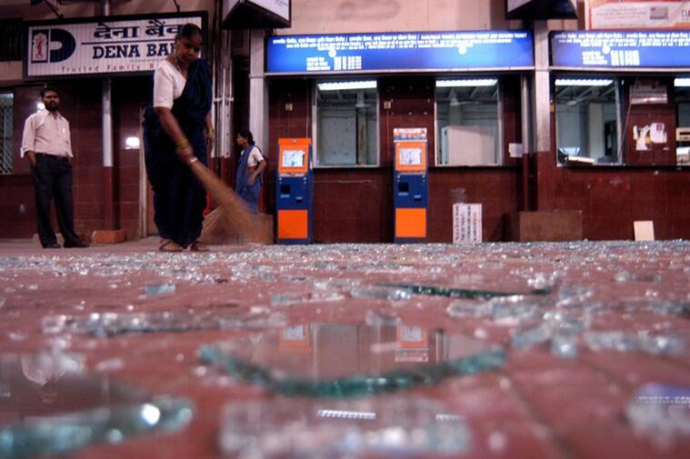

They
On November 26, 2008, Harish Manwani, chairman, and Nitin Paranjpe, CEO, of Hindustan Unilever hosted a dinner at the Taj Mahal Palace hotel in Mumbai (Taj Mumbai, for short). Unilever’s directors, senior executives, and their spouses were bidding farewell to Patrick Cescau, the CEO, and welcoming Paul Polman, the CEO-elect. About 35 Taj Mumbai employees, led by a 24-year-old banquet manager, Mallika Jagad, were assigned to manage the event in a second-floor banquet room. Around 9:30, as they served the main course, they heard what they thought were fireworks at a nearby wedding. In reality, these were the first gunshots from terrorists who were storming the Taj.
When Karambir Singh Kang, the Taj Mumbai’s general manager, heard about the attacks, he immediately left the conference he was attending at another Taj property. He took charge at the Taj Mumbai the moment he arrived, supervising the evacuation of guests and coordinating the efforts of firefighters amid the chaos. His wife and two young children were in a sixth-floor suite, where the general manager traditionally lives. Kang thought they would be safe, but when he realized that the terrorists were on the upper floors, he tried to get to his family. It was impossible. By midnight the sixth floor was in flames, and there was no hope of anyone’s surviving. Kang led the rescue efforts until noon the next day. Only then did he call his parents to tell them that the terrorists had killed his wife and children. His father, a retired general, told him, “Son, do your duty. Do not desert your post.” Kang replied, “If it [the hotel] goes down, I will be the last man out.”
During the onslaught on the Taj Mumbai, 31 people died and 28 were hurt, but the hotel received only praise the day after. Its guests were overwhelmed by employees’ dedication to duty, their desire to protect guests without regard to personal safety, and their quick thinking. Restaurant and banquet staff rushed people to safe locations such as kitchens and basements. Telephone operators stayed at their posts, alerting guests to lock doors and not step out. Kitchen staff formed human shields to protect guests during evacuation attempts. As many as 11 Taj Mumbai employees—a third of the hotel’s casualties—laid down their lives while helping between 1,200 and 1,500 guests escape.